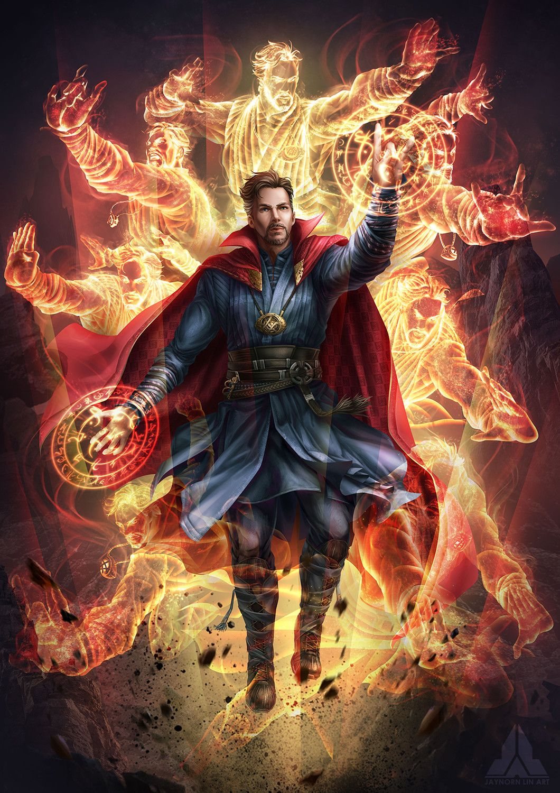

Marvel
Their are very unbeatable characters in MCU. Today we are going see about top 27 most powerful characters in MCU (Marvel Cinematic Universe)

There is nothing like the Marvel Cinematic Universe - and there may never be again. In its Sprawling universe that spans movies and TV, Just who are the some of the greatest characters to come out on top?
Ever since Iron Man blew up the summer box office in 2008, Marvel Studios has enjoyed rare prominence as one of the most famous and unviable movie studios in the world. backed the deep pockets of Disney and armed with a vast cimc books library, Marvel has turned obscure characters-like Thor, Captain America, Black Panther, and especially the Guardians of the Galaxy-into pop culture icons. Under the sadow of the MCU, the hallowed hall of Comic-Con have become ground zero for everyone to find the next big thing.
With so many Characters to pick from , who are actually the greatest characters in the MCU? Whether they're bit players of the streaming shows or one of the original Avengers, these are the greatest characters who inhabit the ever-expanding Marvel Cinematic Universe.
27. Scott Lang, aka Ant-Man

Sometimes the biggest heroes are are a little guy. In 2015, Marvel enlisted Paul Rudd to bring some star power into the bite-sized Avenger, Ant-Man. Thankfully, Rudd was more than up to the task for bringing one of the first Avenger to the big screen, ushering a new heist-oriented sub-franchise into the MCU. The Ant-Man movies may not be the most serious movies in the Marvel Universe, but thanks to Rudd as the lovable thief and family man, they're undeniably some of the most entertaining.
26. Carol Danvers, aka Captain Marvel
Higher, further, faster. One of the most powerful superheroes in the whole Marvel Cinematic Universe is easily Carol Danvers, an ex-U.S. Air Force pilot who finds herself flung into space and landing membership within the Nova Corps. But in her debut film Captain Marvel, the amnesiac Danvers - played by Oscar-winning actress Brie Larson - finds out exactly what kind of force the Nova Corps represent when the alien Skrulls arrive on her home planet Earth in 1995. In her later appearances, she squares off against Thanos without even breaking a sweat, and teams up with other "marvelous" (see what I did there?) heroes like Monica and Kamala
25. Nebula
In her first appearance in 2014's Guardians of the Galaxy, the steely Nebula - played by Karen Gillan - seemed like a two-dimensional antagonist who's only motivation was her eagerness to please Thanos. But her later appearances have afforded Nebula dimensions of complexity, evolving into a survivor of Thanos' psychological and physical abuse who eventually escaped the torment of trying to supersede her adoptive sister Gamora. By Avengers: Endgame, Nebula served as an invaluable asset to saving the entire universe. One day Marvel fans will look back and realize just what kind of a hero that Nebula truly was.
24. Lt. Col. James Rhodes, aka War Machine
There ain't nothing like a best friend who can match your aura. Standing next to Tony Stark in matte gray titanium armor is Lt. Col. James Rhodes who suits up as the heroic War Machine. Quietly one of the most prolific heroes in the entire MCU, Rhodey - first played by Terrance Howard, and then Don Cheadle starting with Iron Man 2 - has been more than just the "best friend" of Iron Man, but a major Avenger in his own right. Although Secret Invasion introduced some complications to Rhodey's actual history in the MCU, there's a sense of relief whenever Rhodey takes to the skies. His harrowing injury in Captain America: Civil War is still one of the most devastating moments in the franchise's long history.
23. Spider-Man, aka Peter Parker

After over a straight decade of two different Peter Parkers in separate franchises, Tom Holland finally swung onto the screen as the MCU's official Spider-Man in Captain America: Civil War. Throughout his own billion-dollar trilogy and additional appearances in the Avengers movies, Holland's Spider-Man is characterized by his youthful enthusiasm, dedication to his loved ones, and short-sighted mistakes. It's hard to breathe new life into such a familiar character, but Holland had the proportional strength of a spider to ensure his version was no carbon copy.
22. Valkyrie

In 2017, for Thor: Ragnarok, Tessa Thompson swaggered into the MCU as Valkyrie, the fiercely independent if also guilt-stricken warrior who represented the last of Asgard's legendary Valkyries. Joining Thor and Hulk in the fight against Hela, Valkyrie quickly rose into a massive fan-favorite, throwing down against hordes of bad guys while looking better than anyone else. In her appearances since Ragnarok, Valkyrie has joined the other Avengers in Avengers: Endgame and has come to rule over New Asgard, though Thor: Love and Thunder shows how much being a leader can be kind of a huge drag
21. Jessica Jones
.jpg)
The second Defender in the Marvel/Netflix sub-franchise, Jessica Jones (played by Krysten Ritter) is perhaps the most reluctant hero in all of the MCU. Working as a freelance investigator, Jones - who commands super strength and a troubled past - notably navigates the trauma of her abuse under the manipulative Kilgrave. Standing far apart from other costumed superheroines, the gritty Jessica Jones doesn't exactly wear her heart on her leather jacket's sleeves. But Ritter's sarcastic and vulnerable portrayal gives Jones dimensions of depth, affording her recognition as a true one-of-a-kind even in a crowded universe.
20. Monica Rambeau

First appearing as a child in Captain Marvel, Monica Rambeau returns as a capable, highly trained adult in the Disney+ series WandaVision before appearing in The Marvels as her own superhero icon. Descending from her military mother Maria Rambeau, Monica is driven and determined, someone who is desperate to make a name for themselves, perhaps as protection due to her history of sudden abandonment. Teyonah Parris plays Rambeau with tenacity, shielding her with a steely exterior - though it's something to see when she's disarmed by a familiar face in the jaw-dropping post-credits scene of The Marvels.
19. Doctor Strange

The Sorcerer Supreme of the MCU is - or rather, was - Dr. Stephen Strange, a celebrated if emotionally distant neurosurgeon whose violent injury to hands drives him to desperation - and into the teachings of the mystic arts. Becoming a superhero was more than just about Strange regaining control of his motor functions however, as his tutelage under The Ancient One also showed Strange the meaning of what it actually means to save people. Though Cumberbatch's performance bears striking resemblances to another goateed superheroic genius and survivor of a horrific origin story, Doctor Strange has more than earned his reputation as one of the most formidable entities in the MCU, the man who stands between realities - between time, space, science, and magic.
18. The Vision
.jpg)
Originating as Tony Stark's A.I. assistant, The Vision comes online in Avengers: Age of Ultron with the final touch of the Mind Stone. Played by Paul Bettany, The Vision is more than just a beep-boop-bot superhero, however. Though his being is synthetic, there is still something of a soul within Vision, which becomes apparent in his romance with Wanda. In the aftermath of his death in Avengers: Infinity War, Vision was rebooted into the perfect TV dad in WandaVision who questions his existence - and fights an eerie, ghostly white version of himself - amid Scarlet Witch's control over Westview.
17. Daisy Johnson, aka Quake
.jpg)
Before Marvel expanded its corners to encompass streaming TV, there was Agents of S.H.I.E.L.D. Leading the episodic series was the hacktivist Inhuman named Daisy Johnson, played by an exceptional Chloe Bennet. In her story of self-discovery and identity, Daisy, who eventually adopted the moniker Quake, was the perfect protagonist for the show, a sarcastic and witty young millennial who spends the series learning not only about her Inhuman powers but also the powers of loyalty, trust, and family - blood or otherwise. Though the MCU has long ago left Agents of S.H.I.E.L.D. behind, many MCU fans are crossing their fingers for Quake to rock the franchise once again.
16. Clint Barton, aka Hawkeye
.jpg)
Hawkeye was a no-name superhero even when The Avengers hit it big with Jeremy Renner playing the part of the skilled expert marksman. That all changed when Matt Fraction's legendary comic book series Hawkeye elevated the character into a major player, and the MCU soon responded by elevating Hawkeye into more than a utility member with a Jason Bourne vibe. With Renner, Clint Barton was allowed to have a personality and even a story of his own, in the case of his secret family who are revealed in Age of Ultron. On Disney+, Barton hands off the bow to a talented youngster named Kate Bishop, played by Hailee Steinfeld.
15. Shang-Chi
.jpg)
Although the renowned Master of Kung Fu had fallen into comic book obscurity by the time the Marvel Cinematic Universe bloomed, Shang-Chi finally became a marquee player again with the release of his 2021 film Shang-Chi and the Legend of the Ten Rings. With Simu Liu in the role, Shang-Chi is more than just a kung fu guy. He's a young man disgusted by his father's traumatic upbringing, a once-happy childhood deformed into something terrible - a childhood spent becoming a human weapon. When we meet Shang-Chi in his solo movie, he's still resentful of the blood his father forced onto his hands. Now free from his father's reach and armed with the still-mysterious Ten Rings, Shang-Chi is ready to prove that some Avengers aren't just made nor born, but trained.
14. Bucky Barnes, aka The Winter Soldier
.jpg)
At the beginning of their service in World War II, Bucky Barnes was the bigger half of Steve and Bucky. But after the Super Soldier serum, Steve Rogers became an American icon while Bucky vanished into the history books - or so everyone thought. Following decades of brainwashing by HYDRA, Bucky emerges as the deadly Winter Soldier in the 2014 Captain America sequel. Bucky has been one of the most engrossing figures in the MCU ever since, a haunted man with countless lives claimed who now seeks a path to redemption. He may not be Avenger material nor worthy of the shield. But between serving alongside Steve to rehabbing in Wakanda, Bucky has lived one of the most endlessly fascinating lives in the whole MCU.
13. Groot
.jpg)
"I am Groot." With just three nonsensical words, fans of the MCU fell in love with the walking, sorta talking Ent-like member of the Guardians of the Galaxy. A big alien tree voiced by Vin Diesel (who, by the way, also did many of the movie's foreign language dubs) was just one of several elements that made 2014's Guardians of the Galaxy something of a risky endeavor, even for an established brand like Marvel. But while audiences were won over by the movie's throwback sci-fi storytelling, it didn't hurt that one of its parting shots was a lil' Groot dancing to the Jackson Five. Subsequent sequels have seen Groot at different ages, but no matter how tiny or beefy we've seen him, we can always rely on hearing him say the only thing he can. We are Groot.
12. Wong
.jpg)
When Wong, played by Benedict Wong, first appeared in 2016's Doctor Strange, he was the no-nonsense librarian for the mystic sorcerers at Kamar-Taj. But somewhere along the way, Wong went from a distant supporting player to a recurring favorite himself, a man who lives a multifaceted life all across the MCU. Whether he's in underground fight clubs (as seen in Shang-Chi) or binge-watching The Sopranos (in She-Hulk: Attorney at Law), Wong is always a welcome presence no matter where he shows up.
11. Thanos
It's almost impossible to summarize in a few sentences a villain like Thanos, memorably played in motion capture by Josh Brolin. Following the Mad Titan's initial teaser at the end of The Avengers in 2012, endless articles explaining his lore filled all our feeds; eventually, even the most casual fan knew to fear Thanos and his goal to collect the Infinity Stones. Years of speculation and surprise cameos made certain that he was a legitimate threat even before Avengers: Infinity War finally hit theaters. While Thanos' actual intentions to use the most powerful relics in the universe are really lofty when you think about it, nothing will change the fact that for most of the 2010s, Thanos instilled fear in all our hearts.
10. Nick Fury
Once, there was an idea To bring together a remarkable group of people, so they could fight the battles mankind never could. The man behind that idea was Nick Fury, the ultra-cool, enigmatic secret agent and one-time head of S.H.I.E.L.D. With Samuel L. Jackson, whose involvement actually dates back to his likeness being used in Marvel's Ultimates comics, Nick Fury proves that the coolest heroes in a superhero universe aren't always the ones with powers. With Nick Fury, information is power, as is total confidence to stand next to gods and still be the most interesting person in the room.
9. Bruce Banner, aka The Hulk
Gamma-radiated rage is embodied by Bruce Banner, also more famously known as The Incredible Hulk. Originally played in the MCU by Edward Norton (for the 2008 movie The Incredible Hulk), Mark Ruffalo took over after Marvel dropped Norton, ahead of The Avengers. Ruffalo has an approach to Bruce that’s distinct from any of his predecessors, portraying him as a man who almost resents his Hulk powers but chooses to live with it rather than fight against it. Over time, Ruffalo found humor in his Hulk, with appearances in Thor: Ragnarok and She-Hulk: Attorney at Law allowing Hulk to show off his funny muscles.
8. Sam Wilson, aka The Falcon
When Steve Rogers retired from active superhero duty, he handed his shield to someone he trusted most: Sam Wilson, who first flew to the MCU's skies as The Falcon. After earning his stripes as an Avenger, Sam Wilson (Anthony Mackie) undertook much heavier responsibility in becoming the second Captain America in the finale of the Disney+ series The Falcon and the Winter Soldier. While Sam knew he couldn’t outright replace Steve, Sam understood that being Captain America isn’t about imitating ghosts of the past. Instead, it's becoming assured in oneself that is the only way of leading a nation - and a cinematic universe - into its next phase
7. Rocket Raccoon
Brash, arrogant, and just a little gross, Rocket Raccoon - voiced by an unrecognizable Bradley Cooper - is a cosmic critter who exists as the troubled heart of the Guardians of the Galaxy. While his origin story was largely shrouded in mystery for years, it was in 2023's Guardians of the Galaxy Vol. 3 that Marvel fans finally saw where Rocket came from - and none of it pretty. Originating as a test subject of The High Evolutionary, Rocket's tragic loss of his friends easily explains his tough exterior and reluctance to call himself part of another family like the Guardians. In the end, however, Rocket knew that a life is only worth living when you have people to share it with.
6. Loki
When Marvel fans first met Loki, played by Tom Hiddleston, he was the selfish god of mischief who wanted nothing more than the spotlight fixated on him. Over a long, long, long journey - including dying at least once - Loki changed. Starting from his escape in Avengers: Endgame and over the course of his solo series on Disney+, Loki wound up being the literal heart of the multiverse in order to save it - and very few know of his sacrifice. Credit to Hiddleston for always finding ways to plant his feet as Loki, a character who has been through so much and seen so many things that would scramble simpler minds. A character highlight: In Thor: Ragnarok, when he and his brother Thor admit that they love each other but acknowledge that they can never be truly brothers due to their drastically different identities. It's quietly one of the most heartbreaking moments in all of the MCU.
5. Steve Rogers, aka Captain America

It is so easy to dismiss a character like Captain America. The gaudy costume, jingoist moniker, and gimmicky arsenal all imply a morally bankrupt mascot that Steve Rogers (played by a thoughtful, careful Chris Evans) decidedly isn't. If Captain America were anyone else, he might be Homelander. Instead, Captain America is an enduring symbol of idealism, the Avenger who fights not for the America that actually exists but for the America that should. Through Evans, whose performance inhabits a part of his acting range that is both sincere and somber, Captain America is so much more than a cheap, propagandic action figure.
4. Natasha Romanoff, aka Black Widow
At first blush, Black Widow - a superhero role that feels locked in sync with Scarlett Johansson's own movie star image - is in a thankless position. For a time she was the token "girl" of The Avengers, and instead of wielding magic hammers or suiting up in cutting-edge titanium armor, her whole deal is that she's so hot she lures men in to kill them. (Or at least, extract information.) An awkward storyline in Avengers: Age of Ultron involving her forced infertility didn't help matters. But because Johansson is a powerhouse actress and because fans can be patient, Black Widow properly grew into a meaningful character, a female action heroine who doesn't embody all the noble ideals of superheroes but doesn't feel the need to either. Following her sacrifice in Avengers: Endgame, Black Widow enjoyed one last moment in the spotlight via her solo 2021 movie (set after the events of Captain America: Civil War) before retreating back into the shadows. Fans still miss her. But with Yelena, the legacy of Black Widow is in good hands.
3. T'Challa/Black Panther
The loss of actor Chadwick Boseman was difficult. Not only because Boseman was a tremendous actor gone way too soon, but because it felt like T'Challa died too. The king of Wakanda and holder of the mythical title Black Panther, T'Challa is a young man caught between worlds and roles. On one hand, he's one part of a larger universe of superheroes and supervillains. On the other hand, he is a king, an ancient obligation beholden to tradition, politics, and preservation of a culture. Heavy is the head that wears the crown, indeed. Sadly, the passing of Boseman in 2020 meant that T'Challa's story is left untold, whatever it might have been. But just because the saga of T'Challa is doomed to remain incomplete doesn't mean that what Marvel fans got is in any way diminished. If anything, what we have left to remember is more precious now, worth more than gold, more than kingdoms, and certainly more than Vibranium.
2. Wanda Maximoff, aka Scarlet Witch
Hell hath no fury like a Scarlet Witch scorned. Following her debut in Avengers: Age of Ultron as one of two dirt-faced punks plucked by Ultron from the rubbles of Sokovia, Elizabeth Olsen's Scarlet Witch has become one of the most legendary figures in the MCU. Her romance with Vision is defining, an endearing pairing of impossible beings who prove that love knows no boundaries, including synthetics. When the MCU entered its brave new Phase Four, it was the surreal sitcom homage WandaVision that greeted us, a streaming hit with a premise totally owed to Wanda's grief and her power to dangerously shapeshift reality. She may be one of the MCU's most feared villains now, but there's no dispute that Scarlet Witch has one of the most colorful histories in the franchise.
1. Tony Stark, aka Iron Man

Truly, there may never be another perfect casting decision like Robert Downey Jr. as Iron Man. Back when movie studios only cared about getting one good movie out the door, RDJ harnessed his Hollywood bad boy image to fill the designer suits of Tony Stark, a charismatic playboy industrialist turned vengeful superhero. The entirety of the MCU and indeed the modern superhero movie franchise was built by Downey Jr. as Iron Man, whose first takeoff in the 2008 blockbuster permanently shaped our culture, for better or worse. Even after all this time, Stark's most memorable quote, "I am Iron Man," feels less like identification and more like dedication. He is the Iron Man, and no matter what happens to the MCU, it is always in his shadow.